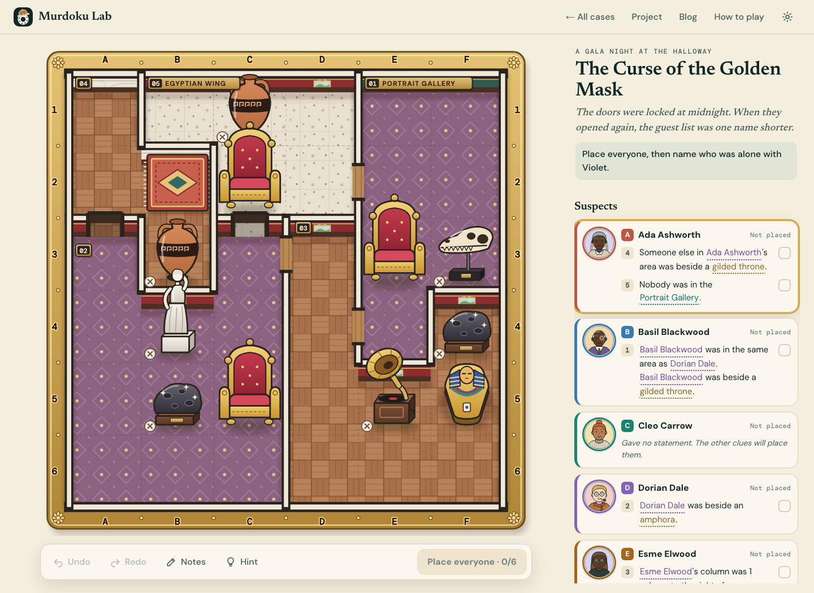
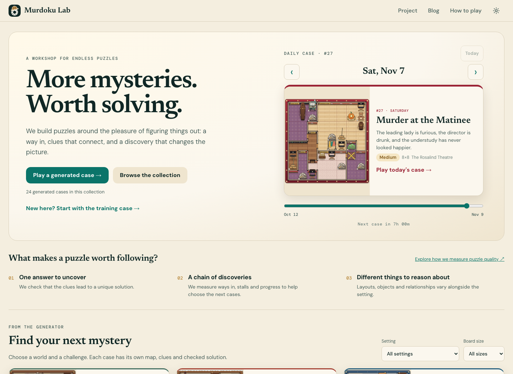
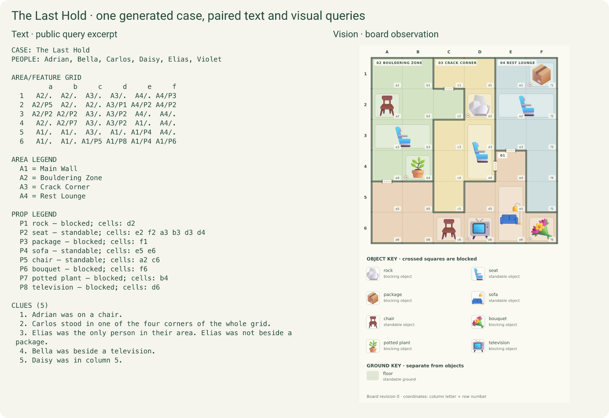
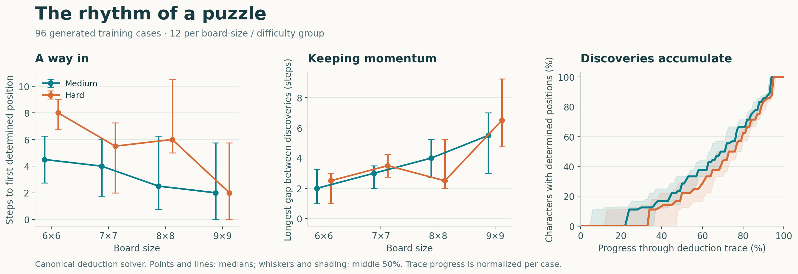

Murdoku Lab · A puzzle workshop for humans and agents
More mysteries.
Worth solving.
Explore illustrated worlds, follow the clues, and place the cast. Murdoku Lab generates detective puzzles with checked solutions, ready to play or export as agent tasks.

Eight worlds to investigate.
A manor, an ocean liner, a museum, a theatre, a chalet, glasshouses, a night train and a college. Each setting brings its own rooms, furniture, colours and frame.

A way in. A reason to return.
Start with a guided training case, use graded hints when you get stuck, and return for the daily mystery. Notes, undo and saved progress let you work at your own pace.

For a longer investigation, try the 16×16 estate or the 24×24 museum. Curious how it started? Read the Treasure Hunt story →
For players
Play generated detective puzzles, follow connected clues, and explore different worlds.
Play a case → · Research Lab → · Create your own → · What makes a puzzle satisfying?For agent builders
Export text and visual tasks with stateful tools and executable gold rewards. Use queries for RL, or query + model rollouts for SFT.
Connect an RL trainer →Different worlds to reason about.
Vary settings, characters, rooms and objects over verified puzzle structures. Colorful visual assets make those settings visible.

One puzzle. Two ways to observe it.
A text board or an illustrated screenshot, paired with clues and the same interactive tool interface.

Solve first. Add the world.
Following VHD-Play, the formal solver establishes the solution before the LLM setter adds the setting and story. The environment uses that solution to provide gold rewards.

A good puzzle has a rhythm.
A way in, discoveries that unlock the next step, and a satisfying reveal. We profile first discoveries, gaps and placement chains to compare how generated puzzles unfold.

The 9×9 sample starts quickly but has longer interruptions later. Opening ease and sustained progress describe different parts of the challenge. Explore the measurements in the blog →
Build an agent that plays.
Agent Horizon supplies long-horizon agentic RL infrastructure on veRL: persistent state, context clearing, asynchronous rollout and training integration.
Queries, rollouts and a solver.
One JSONL with 698 text and 500 visual training queries and successful interactions, plus 106 validation cases in both views. Image assets are included alongside the file.
Murdoku Detective 4B is a trained solver example.
Inspired by Murdoku, by Manuel Garand.